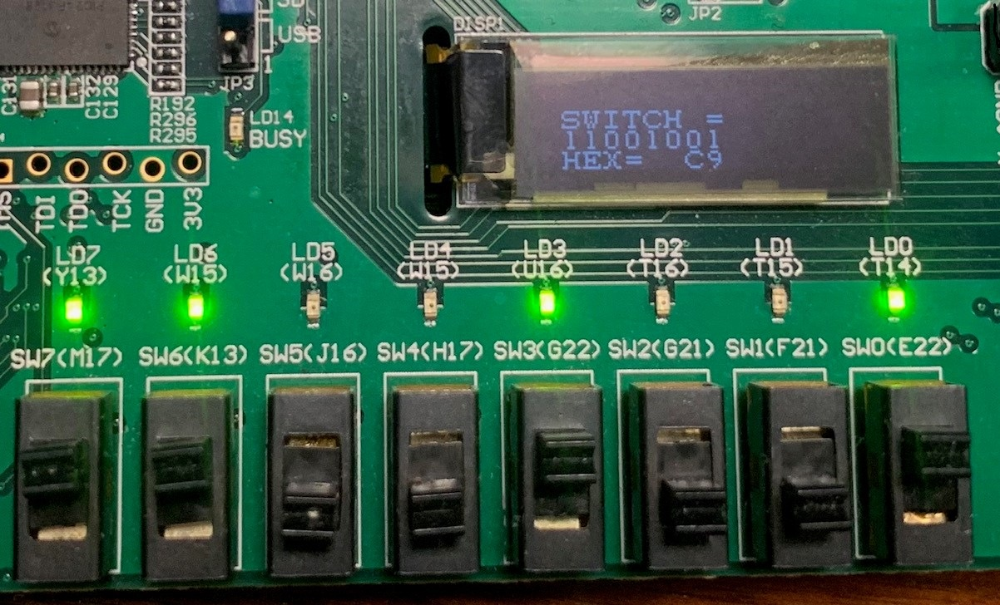

Xilinx
Digilent Nexys Video
MicroBlaze
Final Project Help
Debugging Hints
You can always simulate your design with a Testbench, however, to debug your live code, here are 4 ways to see the live signals:
- You can send a live signal to one of the 8 LEDs on the FPGA board.
- You can "print" a message of the status of signals to the OLED display on the FPGA board. >

- You have 24 GPIO output pins on your FPGA board you could sent live signals to,
and then display the signals on the Logic Analyzer.
- If you are running Microblaze and have the signals hooked to a microblaze register, you can use "printf" to the UART monitor.